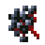
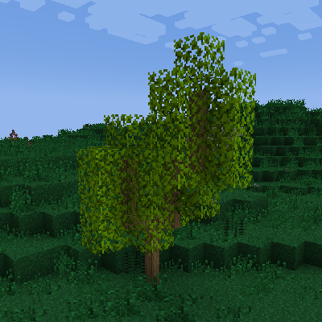
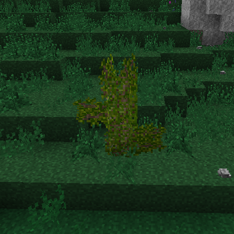

野生水果许多不同种类的野生水果生长在世界各地。可以直接吃掉它们，或用合适的工具来种植。通常来说，它们会以三种不同的形式出现：果树、高大灌木、或小型灌木。
所有会结果的植物都有属于自己的生命周期。它们每年都会生长、开花、结果、然后休眠。
果木的生长是有季节性的。在冬眠的季节中，它们会看上去像枯死了一般。而到了春天，它们则会长出翠绿的新枝，准备开花结果。每种水果的具体结果时间因树而异。另外，果木也会因衰老、或处于不当的气候环境中而死亡。
果树会从一棵小树苗长成高大的果树。果树的树枝是它们最重要的部分，而且只要气候环境合适就会持续生长。随着果树不断成长，它们会在树枝周围长出树叶。树叶会在合适的季节中开花结果。

一棵典型的果树。
果树始于树苗。只有当该果树的非休眠季节且满足其气候要求时，树苗才会开始生长，种下第一段树干。最终树的大小大致由原始树苗方块中包含的树苗数量决定。树苗越多，树就越大。
可以通过嫁接在同一方块中添加更多树苗。要嫁接树苗，只需手持树苗，副手拿着小刀，然后对着已有的树苗右键。
要从果树获取树苗，用斧破坏“肘部”方块（即一侧和上方都有连接的树枝方块）。树苗也可以放置在树的这些“肘部”位置，只要它们不是太高。这样一棵果树就可以结出多种水果。当树叶方块结果时，用右键即可收获果实。这会获得一个水果，并将植株恢复到生长阶段，直到冬季休眠。
种植果树时，正确的温度和湿度至关重要。只有当树木基部（种植树苗处）的年平均温度在该树种范围内时，果树才会生长和结果。同样，湿度由年平均降雨量和树木基部附近的水源决定。
可在以下区域找到：
温度: -5.2°C - 14°C
降雨量: 100 - 350mm
生长所需条件：
温度: -6°C - 15°C
湿度: 7 - 80%
樱桃树在一月至三月生长，四月至五月开花，六月结果。
多方块结构
一棵典型的樱桃树。
可在以下区域找到：
温度: -10.6°C - 10.4°C
降雨量: 130 - 280mm
生长所需条件：
温度: -12°C - 12°C
湿度: 10 - 75%
青苹果树三月至七月生长，八月至九月开花，十月结果。
多方块结构
一棵典型的青苹果树。
可在以下区域找到：
温度: 7.4°C - 24.8°C
降雨量: 220 - 440mm
生长所需条件：
温度: 6°C - 26°C
湿度: 19 - 95%
柠檬树二月至五月生长，六月至七月开花，八月结果。
多方块结构
一棵典型的柠檬树。
可在以下区域找到：
温度: 2°C - 23°C
降雨量: 250 - 450mm
生长所需条件：
温度: 1°C - 24°C
湿度: 22 - 95%
橄榄树三月至七月生长，八月至九月开花，十月结果。
橄榄可用于生产橄榄油，可用作灯的燃料。
多方块结构
一棵典型的橄榄树。
可在以下区域找到：
温度: 9.2°C - 40°C
降雨量: 300 - 500mm
生长所需条件：
温度: 8°C - 41°C
湿度: 27 - 100%
橙树三月至六月生长，七月至八月开花，九月结果。
多方块结构
一棵典型的橙树。
可在以下区域找到：
温度: -3.4°C - 15.8°C
降雨量: 180 - 470mm
生长所需条件：
温度: -5°C - 17°C
湿度: 15 - 95%
桃树十二月至三月生长，四月至五月开花，六月结果。
多方块结构
一棵典型的桃树。
可在以下区域找到：
温度: -7°C - 12.2°C
降雨量: 120 - 300mm
生长所需条件：
温度: -8°C - 13°C
湿度: 9 - 75%
李树一月至四月生长，五月至六月开花，七月结果。
多方块结构
一棵典型的李树。
可在以下区域找到：
温度: -10.6°C - 10.4°C
降雨量: 190 - 310mm
生长所需条件：
温度: -12°C - 12°C
湿度: 16 - 75%
红苹果树三月至七月生长，八月至九月开花，十月结果。
多方块结构
一棵典型的红苹果树。
Can be found in regions with:
Temperature: 11°C - 40°C
Rainfall: 280 - 500mm
Conditions required for growth:
Temperature: 10°C - 41°C
Hydration: 25 - 100%
Bananas grow only vertically, lack leaves, and only fruit at the topmost block. Saplings are dropped from the flowering part of the plant. Once a banana plant is harvested, it dies, and must be replanted in the spring.
多方块结构
一棵典型的香蕉树。
果树的结果日历。
Jan | Feb | Mar | Apr | May | Jun | Jul | Aug | Sep | Oct | Nov | Dec | |
|---|---|---|---|---|---|---|---|---|---|---|---|---|
樱桃 | ||||||||||||
苹果 | ||||||||||||
柠檬 | ||||||||||||
橄榄 | ||||||||||||
橙子 | ||||||||||||
桃子 | ||||||||||||
李子 | ||||||||||||
香蕉 |
休眠
健康
开花
结果
某些水果会长在大型灌木中。这种灌木可以向各个方向生长并扩散。它们既可以向上生长，也可以向四周生长出新的藤条。藤条在一段时间之后也会变成新的灌木。灌木直到完全成熟之前都会试图扩张。使用锋利工具来破坏这些灌木有概率掉落一株灌木（破坏完全成熟的灌木则必定掉落）。

一丛野生的大型灌木。
大型灌木必须在有方块供其藤条扎根时才会扩张。换句话说，想让它扩散，则必须在它周围正下方放一块实心方块。最好还要把地整平，并清掉附近的杂草杂物。
与果树类似，灌木在确定湿度和温度时以植株的基部方块为准，只要年平均降雨量和温度合适就会生长。
任何完全长成的灌木块都可以结出浆果，用右键即可收获。
可在以下区域找到：
温度: -5.2°C - 19.4°C
降雨量: 200 - 500mm
生长所需条件：
温度: -6°C - 21°C
湿度: 17 - 100%
黑莓灌木二月至五月生长，六月至七月开花，八月结果。
它们可以在树木稀少的地区找到。
多方块结构
一丛典型的黑莓灌木。
可在以下区域找到：
温度: -10.6°C - 14°C
降雨量: 180 - 450mm
生长所需条件：
温度: -12°C - 15°C
湿度: 15 - 95%
树莓灌木四月至七月生长，八月至九月开花，十月结果。
它们可以在树木稀少的地区找到。
多方块结构
一丛典型的树莓灌木。
可在以下区域找到：
温度: -8.8°C - 8.6°C
降雨量: 150 - 400mm
生长所需条件：
温度: -10°C - 10°C
湿度: 12 - 90%
蓝莓灌木二月至五月生长，六月至七月开花，八月结果。
它们可以在树木稀少的地区找到。
多方块结构
一丛典型的蓝莓灌木。
可在以下区域找到：
温度: -5.2°C - 15.8°C
降雨量: 120 - 380mm
生长所需条件：
温度: -6°C - 17°C
湿度: 9 - 85%
接骨木灌木二月至五月生长，六月至七月开花，八月结果。
它们可以在树木稀少的地区找到。
多方块结构
一丛典型的接骨木灌木。
大型浆果灌木的结果日历。
Jan | Feb | Mar | Apr | May | Jun | Jul | Aug | Sep | Oct | Nov | Dec | |
|---|---|---|---|---|---|---|---|---|---|---|---|---|
黑莓 | ||||||||||||
树莓 | ||||||||||||
蓝莓 | ||||||||||||
接骨木莓 |
休眠
健康
开花
结果
小型灌木是一种低矮的果木，生成在森林中。如果附近没有太多其他灌木，小型灌木偶尔会扩散到周围的方块。
小型灌木会经历三个生长阶段，成熟后只需用右键即可收获。
多方块结构
三种不同大小的健康小型灌木
可在以下区域找到：
温度: -14.2°C - 1.4°C
降雨量: 280 - 500mm
生长所需条件：
温度: -15°C - 3°C
湿度: 25 - 100%
御膳橘灌木五月至七月生长，八月至九月开花，十月结果。
它们可以在森林中找到。
多方块结构
御膳橘灌木的月度生长阶段。
可在以下区域找到：
温度: -7°C - 12.2°C
降雨量: 200 - 500mm
生长所需条件：
温度: -8°C - 13°C
湿度: 17 - 100%
鹅莓灌木四月至七月生长，八月至九月开花，十月结果。
它们可以在森林中找到。
多方块结构
鹅莓灌木的月度生长阶段。
可在以下区域找到：
温度: -10.6°C - 5°C
降雨量: 200 - 500mm
生长所需条件：
温度: -12°C - 6°C
湿度: 17 - 100%
雪莓灌木三月至六月生长，七月至八月开花，九月结果。
它们可以在森林中找到。
多方块结构
雪莓灌木的月度生长阶段。
可在以下区域找到：
温度: -14.2°C - 6.8°C
降雨量: 80 - 320mm
生长所需条件：
温度: -15°C - 8°C
湿度: 5 - 80%
云莓灌木二月至五月生长，六月至八月开花，九月结果。
它们可以在森林中找到。
多方块结构
云莓灌木的月度生长阶段。
可在以下区域找到：
温度: -1.6°C - 17.6°C
降雨量: 140 - 400mm
生长所需条件：
温度: -3°C - 19°C
湿度: 11 - 90%
草莓灌木十月至十二月生长，一月至二月开花，三月结果。
它们可以在森林中找到。
多方块结构
草莓灌木的月度生长阶段。
可在以下区域找到：
温度: -8.8°C - 6.8°C
降雨量: 100 - 370mm
生长所需条件：
温度: -10°C - 8°C
湿度: 7 - 85%
冬青莓灌木五月至九月生长，十月至十一月开花，十二月结果。
它们可以在森林中找到。
多方块结构
冬青莓灌木的月度生长阶段。
可在以下区域找到：
温度: -14.2°C - 8.6°C
降雨量: 250 - 500mm
生长所需条件：
温度: -15°C - 10°C
湿度: 25 - 100%
蔓越莓灌木三月至六月生长，七月至八月开花，九月结果。
它们可以在森林中找到。与大多数小型灌木不同，蔓越莓灌木在水下生长。
多方块结构
蔓越莓灌木的月度生长阶段。
小型浆果灌木的结果日历。
Jan | Feb | Mar | Apr | May | Jun | Jul | Aug | Sep | Oct | Nov | Dec | |
|---|---|---|---|---|---|---|---|---|---|---|---|---|
御膳橘 | ||||||||||||
鹅莓 | ||||||||||||
雪莓 | ||||||||||||
云莓 | ||||||||||||
草莓 | ||||||||||||
冬青莓 | ||||||||||||
蔓越莓 |
休眠
健康
开花
结果